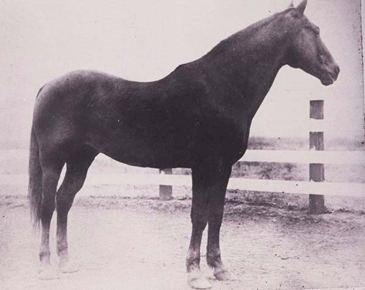
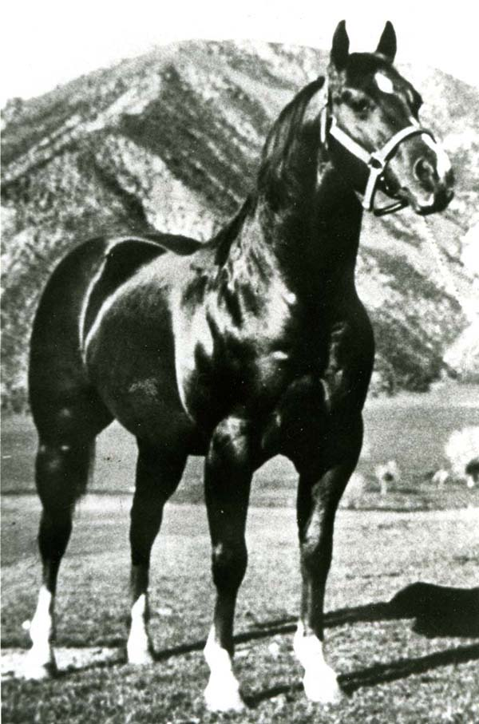

AQHA Hall of Fame
The American Quarter Horse Hall of Fame & Museum in Amarillo, Texas beautifully showcases the horses and people who have earned the distinction of being inducted into the American Quarter Horse Hall of Fame. To be inducted into the Hall of Fame, horses and people must have been outstanding over a period of years in a variety of categories. They must have brought exceptional visibility and/or contributions to the American Quarter Horse. Hall of Fame inductees are chosen each year by a selection committee and are honored at AQHA Convention each March.
Below, you will find several equine members of the AQHA Hall of Fame. These horses, from throughout the history of the Quarter Horse, made massive contributions to the breed in a variety of areas, including racing, showing, cutting, and more. Click on each image to learn more.
Wimpy P-1
The name Wimpy does not denote strength, honor or respect. Yet the stallion thus named received the honorable and respectable P-1 in AQHA’s first stud book.
Wimpy was born on the King Ranch in South Texas. Sired by Solis and out of Panda, Wimpy was a grandson of Old Sorrel on both the top and bottom. Old Sorrel was the foundation sire for the ranch, and was bred by noted breeder George Clegg.
Bob Kleberg decided to show Wimpy in the 1941 Fort Worth Southwestern Exposition and Fat Stock Show. The winner of the stallion class would receive the No. P-1 in AQHA’s first stud book.
In the arena were judge Jim Minnick, ring steward Robert Denhardt and John Burns, president of the show. Preceding Wimpy was Silvertone, a palomino owned and shown by Lee Underwood; Little Joe Jr, by Joe Gonzales; and Silver Dawn, bred by the Waggoner Ranch.
As the stallion entered the ring, Jim Minnick turned to Denhardt and said, ‘What do you think of them pumpkins, Bob?’
More stallions entered and joined the circling parade. Minnick finally stopped the horses, and the blue ribbon went to Wimpy, and with it, P-1 in the stud book.
Back at the King Ranch, Wimpy went to work as a sire. He produced 174 registered foals, the majority of which stayed on the King Ranch. However, the few that left the ranch left a lasting impact.
The chestnut stallion produced sons and daughters that went onto produce AQHA Champions. A few of Wimpy’s better known progeny were Lauro, Silver Wimpy, Wimpy II and Bill Cody.
In 1958, Kleberg gave Wimpy to Clegg, a tribute to the fine horseman. Kleberg hoped the 21-year-old stallion would finish out his days in green pastures. A year later, Clegg sold the stallion to oilman Rex Cauble. Wimpy sired a few foals for Cauble before dying knee-deep in clover. He was 22.
Wimpy was inducted into the American Quarter Horse Hall of Fame in 1989.
King P-234
In the kingdom of Quarter Horses, there are many legends, but there is only one King – King P-234.
The bay colt was foaled June 25, 1932, on Manuel Benavides Volpe’s ranch in Laredo, Texas. The colt’s sire, Zantanon by Little Joe, was considered the Man O’War of Mexico. Jabalina, the colt’s dam by Strait Horse, was hogbacked and difficult to handle, and traced to Little Rondo and Traveler.
Volpe named the foal Buttons, but that was changed when the bay was 2 or 3 years old. Byrne James owned the stallion and it is reported his wife changed King’s name saying, “Buttons, I’m changing your name to King, for truly you are the king of Quarter Horses.”
Around the same time, Jess Hankins of Rocksprings, Texas, was looking for a good stallion to breed to his riding mare. Hankins heard about King, and decided to have a look at the stallion. It was a 75-mile trip, so Hankins hauled his mare, just in case he liked the looks of the regal boy.
Hankins liked the stallion so much he wanted to buy King. Winn Dubose, King’s current owner, was not interested in selling, but Hankins was persistent. After a year of going back and forth, Dubose accepted $800 for the stallion.
Hankins used the stallion as a regular cow horse, roping and cutting on his. The rancher eventually quit using King because of the stallion’s heavy breeding schedule.
King sired a few racehorses such as Squaw H, but is best remembered for siring horses with tremendous performance ability and cow sense. A few of the stallion’s better known sons were Poco Bueno, Royal King, King’s Pistol and Continental King.
The grand old stallion died of a heart attack in 1958 at 26. He was inducted into the American Quarter Horse Hall of Fame in 1989.
Leo
The sorrel stallion had a busted knee and a stifle injury, yet Bud Warren paid $2,500 for 7-year-old Leo, and the state of Oklahoma laughed. It was not long before Leo quieted the critics.
The stallion was born in 1940 on John Wesley House’s place near Cameron, Texas. Leo was sired by Joe Reed II by Joe Reed, and out of Little Fanny also by Joe Reed.
In 1942, John W. Tillman of Pawhuska, Oklahoma, bought Leo for $750, and the sorrel won a number of races for him. Tillman eventually sold Leo, and the stallion went through numerous owners before Bud Warren of Perry, Oklahoma, bought the sorrel in 1947.
Warren remarked in a Quarter Horse Journal interview, “I was the biggest chump in Oklahoma. Leo was crippled. He had a bad knee and he had a big stifle injury. His owner had been trying to sell him and I didn’t know it. He hadn’t got anybody to stick his neck out and buy him, and I was just a big sucker. So I mailed the check.”
It was the right decision, as Leo proved to be a prolific sire and is best remembered as a broodmare sire. Some of Leo’s better-known progeny were Croton Oil, Leo Tag, Leola, Robin Reed and Leo San. A few of the horses produced by Leo’s daughters were Sugar Rocket, Jet Threat, Coldstream Guard, Milk Rivers, Kid Meyers and Fairbars.
Leo was 23 when his left knee started giving him problems. The stallion would lie down to sleep or rest, but then was not able to get up without assistance. Eventually, Warren decided to put the sorrel down. Leo was buried on a hill across from the house.
Leo died in 1967 at 27, and was inducted into the American Quarter Horse Hall of Fame in 1989.
Three Bars
Lady Luck played a hand in his name, but Three Bars (TB) hit the jackpot when he began his career as a sire.
Bred on James W. Parrish’s Midway, Kentucky, farm, Three Bars (TB) dam, Myrtle Dee, and two other mares were bought by Jack Goode, Ned Brent and Bill Talbot in the spring of 1940. Just days after the purchase, Myrtle Dee foaled a good-looking chestnut colt. The men named the foal Three Bars, hoping he would pay off like a slot machine.
Goode placed the colt in race training as a two-year-old, but leg problems kept Three Bars from winning until he was 3. He was injured as a 3-year-old and spent most of 1944 recuperating. Three Bars returned to competition and finished the year with three wins in four starts. However, the last race was a claiming race, and Toad Haggard and Stan Snedigar took ownership of Three Bars for $2,000.
The partners hauled the stallion to Phoenix, Arizona, with the intention of breeding him to Quarter Horse mares and racing him. Hearing of the Thoroughbred, Sidney H. Vail traveled to Phoenix to inspect the stallion for breeding purposes. Liking what he saw, Vail bought Three Bars for $10,000 in 1945.
As a sire, Three Bars found his stride. By the end of the 1950s, a number of mare owners either could not get their mares on the stallion’s limited stud book or could not afford the fee.
Walter Merrick of Oklahoma was impressed with Three Bars, and leased the chestnut for two years. After the lease was up, Merrick hauled his mares to wherever Three Bars was standing.
The stallion’s Thoroughbred progeny include Lena’s Bar (TB), dam of Easy Jet; Lucky Bar, sire of Impressive; and Rocket Bar, grandsire of Dash For Cash. His American Quarter Horse sons include Lightning Bar, Sugar Bars, Gay Bar King, Barred, Zippo Pat Bars and others.
The stallion died two days shy of his 28th birthday on Merrick’s ranch. He was inducted into the American Quarter Horse Hall of Fame in 1989.
Old Sorrel
El Alazan Viejo. It translates as “the old sorrel.” The stallion without an official name was the cornerstone of the King Ranch’s breeding program.
In 1915, Kleberg sent his cousin, Caeser Kleberg, to buy a colt form George Clegg in Alice, Texas. Caeser chose a sorrel colt by Hickory Bill out of a Thoroughbred mare. The price was $125 and Clegg led the mare and colt 25 miles to the ranch’s headquarters.
At first, Kleberg referred to the colt as “the George Clegg colt,” but the Kiñenos, the Mexican ranch hands, labeled the colt, “el Alazan,” the sorrel, and later “el Alazan Viejo,” the old sorrel, and the name stuck.
The stallion matured to 14.3 hands and possessed a wonderful balance, conformation and temperament. Kleberg soon discovered that Old Sorrel was a quick, natural cow horse, and said, “(The stallion) was the best cow horse I ever rode.”
In 1921, Old Sorrel was bred to “50 head of using saddle mares, the best we could get from the ranch, as perfectly conformed as possible,” Kleberg said. The mares were of pure or grade Thoroughbred breeding. The following summer, the foals arrived, and Northway said, “(the foals) were uniform in conformation. And certainly this was our first indication that the horse was prepotent and dominant in his characteristics.”
Kleberg wanted to perpetuate the qualities of Old Sorrel through controlled line-breeding. The best daughters were bred to the stallion, and the results were encouraging, but not exceptional. So the management bred Solis, a 1923 son of Old Sorrel, to his half sisters. The resulting foals were so good, the ranch continued this breeding program. Other sons of Old Sorrel – Cardinal, Macanudo, Hired Hand and Little Richard – were bred to half sisters, nieces and grandnieces.
A product of this breeding program was Wimpy. The stallion was by Solis and out of Panda, a daughter of Old Sorrel. Wimpy won the 1941 Southwestern Exposition and Fat Stock Show in Fort Worth, Texas, and was honored with the No. P-1 in the AQHA registry.
Old Sorrel died in 1949 at 31. He was inducted into the American Quarter Horse Hall of Fame in 1990.
Poco Bueno
Poco Bueno. The English translation reads, “pretty good.” It is a wishy-washy compliment for one of the most influential sires of the 1940s, ‘50s and ‘60s.
Foaled in 1944, Poco Bueno was by King P-234 and out of Miss Taylor. The plain brown colt did not possess his sire’s regal blood bay color, and he was a late bloomer.
In October of 1945, Hankins loaded the colt and some other horses, and hauled them to San Angelo, Texas. E. Paul Waggoner of the Waggoner Ranch bought the brown yearling for $5,700.
Waggoner shipped the stallion to his Three D Stock Farm in Arlington, Texas, and began showing Poco Bueno. The brown colt won several shows such as the Denver National Western Stock Show and Southwestern Exposition and Fat Stock Show.
Bob Burton broke the two-year-old to ride, but it was Pine Johnson who showed the brown stallion to cutting fame. Johnson took Poco Bueno to the toughest competitions, and the duo consistently raked in the prizes.
Waggoner then sent Poco Bueno back to the arena to earn his AQHA Champion title. The stallion earned the award at the same time as his daughter Poco Lena.
Poco Bueno sired 405 registered foals. Of these, 36 were AQHA Champions, and three are in the National Cutting Horse Association’s Hall of Fame: Poco Mona, Poco Stampede and the renowned Poco Lena.
Fagan once said, “To tell you the truth, Poco Bueno was the greatest horse I’ve ever been with, and I’ve been around a lot of them. He was easy to handle. Gentle. And smart. Nearly all his colts were the same way.”
The brown stallion died in 1969, and was buried standing up across from the ranch entrance. A four-ton granite marker marks the special spot.
Poco Bueno was inducted into the American Quarter Horse Hall of Fame in 1990.
Doc Bar
Doc Bar revolutionized the cutting industry in a way never seen before or since.
The chestnut stallion was foaled in 1956 on Tom Finley’s Arizona ranch. Doc Bar was by Lightning Bar by Three Bars (TB) and out of Dandy Doll by Texas Dandy. The chestnut colt was bred to run, but failed miserably.
Earning a total of $95 in four outs, Doc Bar was given to Charley Araujo of California to show at halter. This endeavor seemed doomed to fail because Doc Bar did not fit what the judge’s eye had been groomed to see. The chestnut stood a scant 15 hands and did not have the punched-together look of his contemporaries.
The halter industry was ripe for change. With Araujo at the lead and the stallion’s unique conformation, the guidelines for halter horse champions were altered almost overnight. Out of 15 shows, Doc Bar won nine grand champion titles and one reserve champion title.
Doc Bar attracted the attention of Dr. and Mrs. Stephen Jensen of Double J Ranch in Paicines, California. The couple had pieced together a broodmare band of Poco Tivio, Hollywood Gold, King and Leo mares, and was in the market for a stallion. Doc Bar fit their needs and the couple bought him in 1963 for $30,000.
Over the following years, Doc Bar sired National Cutting Horse Association Futurity winners, world champions and top-10 horses. A few progeny include Doc O’Lena, Dry Doc, Fizzabar and Doc’s Kitty. He was the grandsire of Smart Little Lena, Tenino San, Docs Sangria and Don N Willy.
In AQHA competitions, Doc Bar’s get amassed nearly 9,000 points and won multiple world championships.
The key to Doc Bar’s success was summed up by Charlie Ward, manager of the Jensens’ ranch, “is that he’s so consistent in his type. His colts are all uniform and possess a lot of sense. They’re easy to train, they have a lot of natural ability – every one of them is cowy.”
Doc Bar died in 1992 at 36. He was inducted into the American Quarter Horse Hall of Fame in 1993.
Traveler
He has been labeled a mystery horse. The dappled stallion with unknown breeding and origins would go years without a name. Eventually, he would be known as Traveler.
“He was one of the most perfect-looking horses I ever saw and sired great running horses from good mares,” wrote George Clegg, American Quarter Horse Hall of Fame member and Quarter Horse breeder.
This description falls in line with every other description about Traveler. The sorrel stallion with scattered roan hairs went from obscurity to fame almost overnight.
It is reported that Traveler was born around 1880 in upstate New York. He was shipped in a boxcar to Texas in the early 1880s and hitched to a dirt scraper.
One day, the railroad contractor decided he would rather have a mule than Traveler. So he swapped with a man named Triggerfoot Self. Self took the stallion back to Eufaula, Texas, and ran Traveler against Mayflower, a fast and well-known mare in central Texas.
Traveler won the race and changed hands. The new owner, Brown Seay, owned and raced Traveler for several years. Time eventually caught up with the stallion, and he pulled a ligament or muscle in one of his hind legs, ending his racing career.
Seay sold the horse, and Traveler went through a number of owners. His last owners were Dow and Will Shely of Alfred, Texas, in 1903. The brothers used him as a herd sire.
Clegg claimed Traveler produced good foals when bred to good mares. Others said Traveler produced quality foals with any mare.
As a sire, Traveler stamped his foals with good disposition, conformation and speed. Because of these and other traits, a large number Traveler’s colts were gelded.
The sorrel made his greatest impact in his later years. When bred to the Shelys’ mares, Traveler produced Little Joe, Texas Chief and Possum (King).
Traveler died in 1912 at the estimated age of 32. He was inducted into the American Quarter Horse Hall of Fame in 1994.
Mr. San Peppy
Not many horses can be said to have changed the course of an entire industry, but Mr San Peppy did just that for two segments – ranching and cutting.
In the 1960s, Gordon B. Howell was an American Quarter Horse breeder with equal interests in cutting and in racing. He bred his stallion, Leo San, with the mare, Peppy Belle by Pep Up by Macanudo, seven times. Their first foal, Peppy San, was foaled in 1959 and inducted into the American Quarter Horse Hall of Fame in 1999. Leo San and Peppy Belle’s last mating produced Mr San Peppy in 1968.
Gordon asked Bubba Cascio to start Mr San Peppy, but Bubba didn’t have time and recommended cowboy Buster Welch.
While Mr San Peppy was getting started in cutting, the historic King Ranch in Texas was looking for a top sire.
AQHA Past President Stephen “Tio” Kleberg went to a few cutting events and eventually saw Mr San Peppy. By that time, Buster had purchased the stallion and was hauling for the NCHA world title, which they won in 1974.
The King Ranch bought him in 1976, and Buster went along to keep the horse in shape. Between visits to the breeding shed, Mr San Peppy won the NCHA World Championship and claimed the AQHA Senior Cutting World Championship.
The stallion’s foal crops, meanwhile, were proving themselves. Mr San Peppy earned more than $107,850 in NCHA competition. His foals won more than $2.63 million in NCHA competition, not to mention earning more than 3,200 points in AQHA competition.
Less measurable but no less important is the stallion’s effect on the King Ranch remuda and on the other ranches where no performance records are kept except in cowboys’ memories.
When the stallion died in 1998, he was buried on the ranch where he was ridden every day and where his offspring are still making good cowboy memories.
Mr San Peppy was inducted into the American Quarter Horse Hall of Fame in 2011.
Skipper W
How good was Skipper W?
Good enough that sons and daughters, grandsons and granddaughters, great-grandsons, great-granddaughters, great-great-great-whatevers right down to today, nearly half a century after the stallion’s death, are proudly proclaimed “Skipper W-breds” by their admirers.
A 1945 sorrel stallion by Nick Shoemaker out of Hired Girl by Cowboy, Skipper W was bred and owned throughout his life by H.J. “Hank” Wiescamp.
Skipper W grew into a well-proportioned stallion standing about 15 hands and weighing 1,300 pounds, with speed and athleticism that he still passes on.
“Usually a stud becomes better known as a sire of sires or a sire of broodmares,” said Hank, who entered the American Quarter Horse Hall of Fame in 1994. “Skipper W turned out to be a sire of both. Skipper W flat out-produced himself. I don’t know any other way to put it. When I bred him to a mare, he consistently sired a foal who was better than both he and the mare.”
Skipper W was shown only three times – as a 4-year-old at the National Western Stock Show in Denver, the Colorado State Fair at Pueblo and the New Mexico State Fair at Albuquerque – and was grand champion at each. Retired undefeated, he still went to occasional ropings but never competed seriously.
Skipper W sired 132 foals that were registered with AQHA, an untold number of other horses in other registries and quite a few with no papers at all. Of those in the AQHA Stud Book, 73 were performers, including 58 that earned 1,392 halter points, 27 with 586.5 performance points, and 13 that became AQHA Champions. The stallion also sired three race winners.
Skipper W never stood to outside mares and died of a heart attack at age 18 in 1963. Hank kept back seven of his sons and 57 daughters for breeding.
Skipper W was inducted into the American Quarter Horse Hall of Fame in 2011.